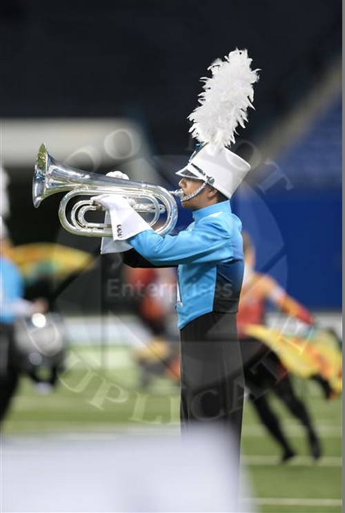

I started taking piano lessons when I was in 1st grade. I also sang in my church choir from an age of 5 up until middle school. In 5th grade I joined Atlanta Young Singers, and got to travel to places like Memphis, New York City, and internationally to Sweden, Finland, Estonia, and Latvia. I have also taken AP Music theory my junior year of high school, where I learned about 4-part polyphonic part-writing in the style of Bach. For my senior project, I started a barbershop quartet, and we sang christmas carols at nursing homes. Currently, I am a member of Georgia Tech's chamber choir.
In 5th grade I started playing saxophone in the concert band, and from there I also played in the jazz ensemble in middle school. In high school I started taking jazz piano lessons from the community music center in Decatur. I also played saxophone in a jazz combo at the CMC in little 5 points.
In summer of late middle school and early high school, I went to Chicago Joe's Rock and Blues camp, where I played piano, saxophone and even sang an Elvis song. In high school, I joined Decatur High School's Rock 'n' Roll Revue, where student bands form to play rock songs from the 80s and before. My senior year, I joined a rock band called Stratford.
In high school, I played saxophone in Decatur High School's marching band. My senior year, I switched from saxophone to marching baritone, in hopes that it would help me march drum and bugle corps. Fortunately, I got a spot for the 2014 Spirit of Atlanta brass line. Currently I am a baritone player in the Georgia Tech Yellow Jacket Marching band, and I have been a member of Spirit Of Atlanta's brass line for two summers.
